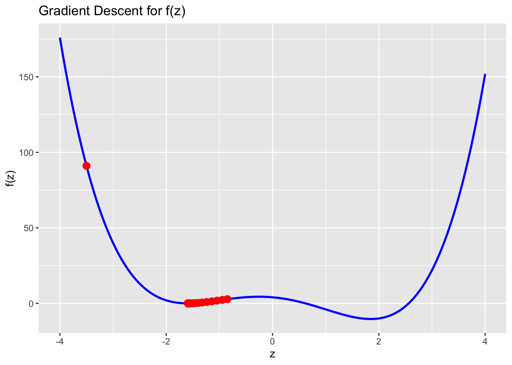
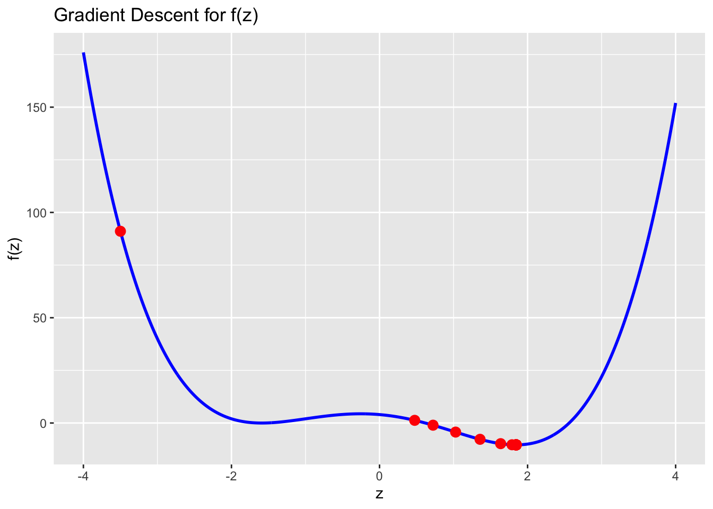

Using your answer from above, what is the answer to \[
\frac{d}{dx}g(x, y) \Bigg|_{(x=3, y=4)} \quad \text{and} \quad \frac{d}{dy}g(x, y) \Bigg|_{(x=3, y=4)} ?
\]
Define \(g(x, y)\) as a function in R, compute the gradient of \(g(x, y)\) with respect to \(x=3\) and \(y=4\). Does the answer match what you expected?
#Defining the function g(x, y)g <-function(x){return((x[1] -3)^2+ (x[2] -4)^2)}#Computing the gradient of g(x, y) at x = 3 and y = 4library(numDeriv)grad_g <-grad(g, c(3, 4))grad_g
Define \(h(\u, \v)\) as a function in R, initialize the two vectors \(\u\) and \(\v\) as torch_tensors. Compute the gradient of \(h(\u, \v)\) with respect to \(\u\). Does the answer match what you expected?
Plot the curve \(f\) and add taking \(\eta = 0.02\), add the points \(\{z_0, z_1, z_2, \dots z_{100}\}\) obtained using gradient descent to the plot. What do you observe?
n <-100z <--3.5eta <-0.02z_vals <-c(z)for(i in1:n){ df <-4*z^3-12*z -3 z <- z - eta * df z_vals <-c(z_vals, z)}#plotting the curvex_vals <-seq(-4, 4, by =0.01)y_vals <-f(x_vals)df_f <-data.frame(x = x_vals, y = y_vals)df_z <-data.frame(x = z_vals, y =f(z_vals))ggplot() +geom_line(data = df_f, aes(x, y), color ="blue", size =1) +geom_point(data = df_z, aes(x, y), color ="red", size =3) +ggtitle("Gradient Descent for f(z)") +xlab("z") +ylab("f(z)")
Warning: Using `size` aesthetic for lines was deprecated in ggplot2 3.4.0.
ℹ Please use `linewidth` instead.

The graph outputted visualizes the gradient descent algorithm for the function. The blue line represents the curve of the function \(f(z)\), while the red dots show the values of \(z\) obtained during each iteration of the gradient descent algorithm. As the algorithm progresses, the value of \(z\) moves towards the minimum of the function, which is at \(z = -0.522\). The red dots show the values of \(z\) obtained at each iteration of the algorithm, and we can observe that they converge to the minimum.
1.5 (5 points)
Redo the same analysis as Question 1.4, but this time using \(\eta = 0.03\). What do you observe? What can you conclude from this analysis
n <-100z <--3.5eta <-0.03z_vals <-c(z)for(i in1:n){ df <-4*z^3-12*z -3 z <- z - eta * df z_vals <-c(z_vals, z)}#plotting the curvex_vals <-seq(-4, 4, by =0.01)y_vals <-f(x_vals)df_f <-data.frame(x = x_vals, y = y_vals)df_z <-data.frame(x = z_vals, y =f(z_vals))ggplot() +geom_line(data = df_f, aes(x, y), color ="blue", size =1) +geom_point(data = df_z, aes(x, y), color ="red", size =3) +ggtitle("Gradient Descent for f(z)") +xlab("z") +ylab("f(z)")

The graph outputted visualizes the gradient descent algorithm for the function. The blue line represents the curve of the function \(f(z)\), while the red dots show the values of \(z\) obtained during each iteration of the gradient descent algorithm. As the algorithm progresses, the value of \(z\) moves towards the minimum of the function, which is at \(z = -0.522\). The red dots show the values of \(z\) obtained at each iteration of the algorithm, and we can observe that they converge to the minimum. The path taken is slightly different from the previous graph, as the red dots ate oscillating before converging on the minimum, this is because of the larger eta value.
Based on the analysis, we can see that the choice of the learning rate \(\eta\), the performance of the gradient descent algorithm is determined. A smaller learning rate, results in slower convergence while a larger learning rate results in overshooting and oscillating around the minimum. We can conclude, that it is important to choose an appropriate learning rate based on the specific problem being solved.
—
Question 2
50 points
Logistic regression and interpretation of effect sizes
For this question we will use the Titanic dataset from the Stanford data archive. This dataset contains information about passengers aboard the Titanic and whether or not they survived.
2.1 (5 points)
Read the data from the following URL as a tibble in R. Preprocess the data such that the variables are of the right data type, e.g., binary variables are encoded as factors, and convert all column names to lower case for consistency. Let’s also rename the response variable Survival to y for convenience.
Fit a logistic regression model to predict the probability of surviving the titanic as a function of:
pclass
sex
age
fare
# siblings
# parents
full_model <-glm(y ~ pclass + sex + age + fare + siblings.spouses.aboard + parents.children.aboard, data = df, family =binomial())summary(full_model)
Call:
glm(formula = y ~ pclass + sex + age + fare + siblings.spouses.aboard +
parents.children.aboard, family = binomial(), data = df)
Deviance Residuals:
Min 1Q Median 3Q Max
-2.7789 -0.5976 -0.3987 0.6156 2.4409
Coefficients:
Estimate Std. Error z value Pr(>|z|)
(Intercept) 5.297252 0.557409 9.503 < 2e-16 ***
pclass -1.177659 0.146079 -8.062 7.52e-16 ***
sexmale -2.757282 0.200416 -13.758 < 2e-16 ***
age -0.043474 0.007723 -5.629 1.81e-08 ***
fare 0.002786 0.002389 1.166 0.243680
siblings.spouses.aboard -0.401831 0.110712 -3.630 0.000284 ***
parents.children.aboard -0.106505 0.118588 -0.898 0.369127
---
Signif. codes: 0 '***' 0.001 '**' 0.01 '*' 0.05 '.' 0.1 ' ' 1
(Dispersion parameter for binomial family taken to be 1)
Null deviance: 1182.77 on 886 degrees of freedom
Residual deviance: 780.93 on 880 degrees of freedom
AIC: 794.93
Number of Fisher Scoring iterations: 5
2.4 (30 points)
Provide an interpretation for the slope and intercept terms estimated in full_model in terms of the log-odds of survival in the titanic and in terms of the odds-ratio (if the covariate is also categorical).
Hint
Recall the definition of logistic regression from the lecture notes, and also recall how we interpreted the slope in the linear regression model (particularly when the covariate was categorical).
The intercept term (5.297252) represents the estimated log-odds of survival when all the predictor variables are equal to zero. In other words, when a passenger is female, in the first class, with no siblings/spouses or parents/children on board, and with statistically significant \((p < 2e-16)\), meaning that the log-odds of survival is significantly different from zero for the reference category. The slope terms represent the estimated change in the log-odds of survival associated with one-unit increase in each predictor variable. The odds ratio can be calculated by taking the exponent of each coefficient. For example, for the siblings.spouses.aboard predictor, the exponent of the coefficient is -0.401831. This suggests that the odds of survival decrease by 0.401831, which is by a factor of 33.1% for each additional sibling/spouse on board.
—
Question 3
70 points
Variable selection and logistic regression in torch
3.1 (15 points)
Complete the following function overview which takes in two categorical vectors (predicted and expected) and outputs:
Using the caret package, setup a \(5\)-fold cross-validation training method using the caret::trainControl() function
controls <-trainControl(method ="cv",number =5)
Now, using control, perform \(5\)-fold cross validation using caret::train() to select the optimal \(\lambda\) parameter for LASSO with logistic regression.
Take the search grid for \(\lambda\) to be in \(\{ 2^{-20}, 2^{-19.5}, 2^{-19}, \dots, 2^{-0.5}, 2^{0} \}\).
lasso_fit <-train( y ~ .,data =subset(df, select =-name),method ="glmnet",trControl = controls, tuneGrid =expand.grid(alpha =1,lambda =2^seq(-20, 0, by =0.5) ),family ="binomial")
Using the information stored in lasso_fit$results, plot the results for cross-validation accuracy vs. \(log_2(\lambda)\). Choose the optimal \(\lambda^*\), and report your results for this value of \(\lambda^*\).
Now, define the loss function Loss() which takes in two tensors X and y and a function Fun, and outputs the Binary cross Entropy loss between Fun(X) and y.
Loss <-function(X, y, Fun){nn_bce_loss()(Fun(X), y)}
Initialize an optimizer using optim_adam() and perform \(n=1000\) steps of gradient descent in order to fit logistic regression using torch.
f <-logistic()optimizer <-optim_adam(f$parameters, lr =0.01)n <-1000for(i in1:n){ loss <-Loss(X, y, f) optimizer$zero_grad() loss$backward() optimizer$step()if(i %%100==0){cat(sprintf("Step %d, Loss = %.4f\n", i, loss)) }}
Step 100, Loss = -27.3921
Step 200, Loss = -33.5898
Step 300, Loss = -35.9427
Step 400, Loss = -36.7253
Step 500, Loss = -37.4940
Step 600, Loss = -37.5942
Step 700, Loss = -37.9771
Step 800, Loss = -37.9799
Step 900, Loss = -38.0766
Step 1000, Loss = -38.1736
Using the final, optimized parameters of f, compute the compute the predicted results on X
Create a summary table of the overview() summary statistics for each of the \(4\) models we have looked at in this assignment, and comment on their relative strengths and drawbacks.
Based on the output, we can see that the Stepwise regression model seems to perform slightly better than the Full Model, while the LASSO model selects a smaller set of predictors and has a lower false positive rate. The Torch model, performs very poorly and is hence not suitable for the given data. However, it is important to note that the relative strengths and weaknesses of the models may depend on the specific context and the goals of the analysis.
—
Session Information
Print your R session information using the following command